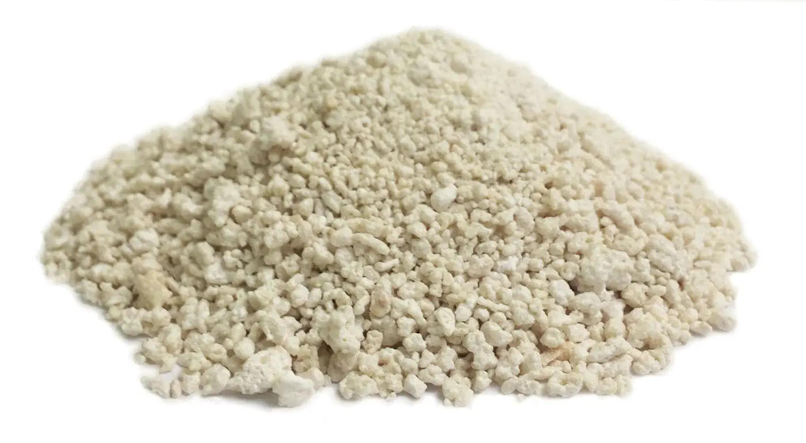

Composition
A rumen-protected fat, providing energy for improved milk yield, fertility and general health
Description
A High Digestible Energy rich protected Fat for Dairy Cow and Beef Cattle, It bypasses the rumen (ideal PH >6) but is broken down in the abomasum (PH 2.5) to release the fat and calcium for digestion. It is 96% digestible.
Indications
Increases milk production
To increase fat percentage in meat
Improves Digestibility
Increases Fertility
Increases progesterone-the essential hormone for pregnancy
Reduce acidosis
Reduce lameness
Reduce incidence of Displaced abomasum
Reduces saturated fatty acid concentration of milk fat
Reduces production of methane
Dosage & Administration
For Lactating Cows: 0.5-1kg/ 100kg feed or 20g/cow once daily
For Beef Fattening: 0.75-1.5kg/ 100kg feed or 25g/cattle twice daily
For Sheep & Goat: 0.5-1kg/100kg feed or 5g/sheep or goat once daily
For Poultry: 0.2-0.25kg/100kg feed or 1g/liter drinking water
Storage
Store in a cool (below 250C) & dry place, protect from light. Keep all medicines out of reach of children.
Pack size
1 kg & 500 gm